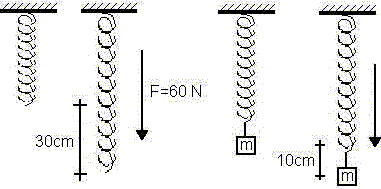

Movimiento Armónico Simple.
Problema
Una fuerza de 60N estira 30 cm cierto resorte. Se cuelga del resorte un cuerpo de 4 kg de masa y se le deja llegar al reposo. Después se tira hacia abajo 10 cm y se abandona a sí mismo.

a) ¿Cuál es el período del movimiento?
b) ¿Cuáles son la magnitud y dirección de la aceleración del cuerpo cuando se encuentre 5 cm por encima de la posición de equilibrio, moviéndose hacia arriba?
c) ¿Cuál es la tensión del resorte cuando el cuerpo se encuentra 5 cm por encima de la posición de equilibrio?
d) Cuál es el tiempo mínimo necesario para pasar de la posición de equilibrio a la del punto situado 5 cm por encima?
e) Si se colocara un pequeño objeto sobre el cuerpo que oscila, ¿permanecería en contacto con el cuerpo, o no?
f) Si se colocara un pequeño objeto sobre el cuerpo que oscila y se duplica su amplitud, ¿ Dónde empezaría a separarse los dos cuerpos?
Datos:
F = 60 N
x0 = 30 cm = 0,3 m
m = 4 kg
A = 10 cm = 0,1 m